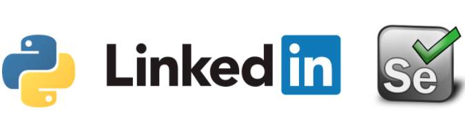

Scraping Linkedin Jobs Data with Selenium
This project helps me prioritize my jobs applications on just a few jobs, rather than mountains of jobs lists. In this project, jobs postings were scraped and then further analyzed with an Active Learning Machine Leaning Model, which tells me which top # jobs I should focus on based on the prior knowledge of my choices.
